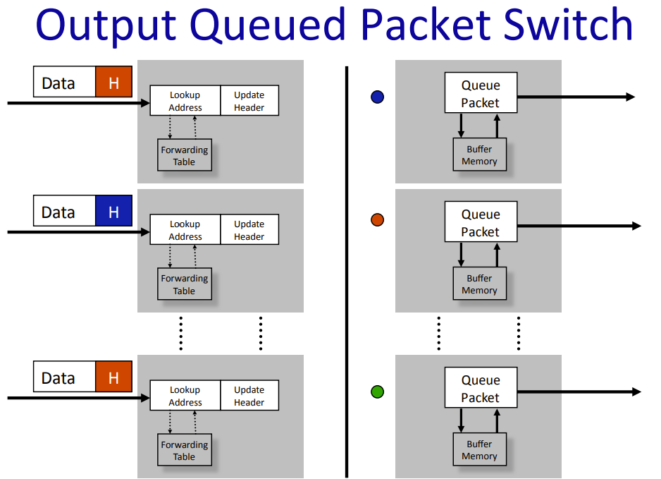

Unit3: Packet Switching
1 What is Packet Switching?
数据被塞进包里，通过路由逐跳从源主机送到目标主机。中间路由或网关或以太网交换机负责转发包。
2 End-to-End delay
2.1 传播延迟（Progagation Delay）
传播延迟是指信息的一个比特在链路上传输所需的时间，取决于链路的长度和比特传输的速度。在大多数情况下，比特的传播速度接近光速。传播延迟与链路的数据速率无关，而仅取决于比特的传播速度和电缆的长度。
2.2 Packetization Delay
packetization delay 是指从将数据包的第一个比特放入链路到最后一个比特放入链路之间的时间。packetization delay 取决于我们能够将比特放入链路的速度，也就是数据速率。数据包化延迟只与数据包的长度和数据速率有关，而与链路的长度或比特传播速度无关。
2.3 端到端延迟
将一个长为 \(p\) 的包从源主机到目的主机，中间经过若干条线路，每条线路的长度为 \(l_i\)，数据速率为 \(r_i\)，则端到端延迟为
\[ t = \sum_i \left(\frac{p}{r_i} + \frac{l_i}{c}\right) \]其中 \(c\) 是数据在传播介质（光纤等）中的速度，接近光速。
这不是故事全部，当多个包同时抵达路由器，它们通过 packet buffer 暂存在一起并以 FCFS（First-Come-First-Served）的顺序送出。因此，我们需要加入每条线路上的排队延迟（Queueing Delay）\(Q_i\)，即
\[ t = \sum_i \left(\frac{p}{r_i} + \frac{l_i}{c} + Q_i(t)\right) \]排队延迟是不可预测的，取决于网络中其他用户发送的流量，是端到端延迟的唯一随机变量。
2.4 Playback Buffers
这个东西就是平常在网站上看视频时的灰色进度条，表示已经接收到且提前缓冲好但还未播放的数据。这部分比较简单，略过。
3 How a packet switch works
3.1 Output Queued Packet Switch
下图是一个交换机或路由器内的布局。

Packet Queue 用于在拥塞时缓存将要发出去的包，不同颜色的包表示不同的转发端口。当有两个包要从相同的端口转发，其中一个会先在队列中等待。如果所有的 \(n\) 个端口都要从相同的端口转发出去，会导致效率的急剧降低。
3.2 Input Queued Packet Switch

input queued 将缓存放在了输入端口。相应地，input queued 会产生 Head of Line(HOL) Blocking 问题：当当前队列最前端的数据过大时，将它 switch 出去要花费更多的时间，导致队列后面其他端口的包因为堵塞无法发出。这对效率是一个很大的影响（大概会缩减至 \(2-\sqrt{2}\approx 58\%\) ）。解决方法是引入 Virtual Output Queues，对于每个 input queue，把将要发送到同一个端口的包再分到一个 virtual queue 中，这样不同发出端口的包不会相互影响。
4 Strict Priorities and Guaranteed Flow Rates
如果有很多流经过队列，它们将按照 FIFO 顺序离开。谁发送的最多，谁的速率就最高。如果流量真的很大，那么一小部分流量可能会被完全挤出。这样鼓励了不良行为——对于一个流来说，最好的做法是尝试通过尽可能快的发送来挤出所有其他流。
一个方法是引入严格优先级 (Strict Priorities)。一个高优先级队列一个低优先级队列，只有当高优先级队列的处理完了才能到低优先级。但如果高优先级的流完全占据了数量上的优势，低优先级的会被饿死1。
1 这个描述真的太资本主义了，乐。
更通用的做法是，引入带权优先级 (Weighted Priorities)。考虑 \(n\) 个优先级队列，每个队列都有一个权重 \(w_i\)。我们分若干轮处理所有的包。对于每一轮的每个队列，我们为这个队列处理 \(w_i\) bit 的数据（当然在实际中不能）。当第 \(i\) 个队列的第 \(k\) 个包到达时，我们算出它将在第几轮为完全送出，记为 \(F_k\)，有
\[ F_k = \max\{F_{k-1}, \mathrm{now}\}+\frac{L_k}{w_i} \]
\(\rm now\) 是当前的轮数，因为可能会有队列为空的情况。\(L_k\) 是包的长度。此时，我们遍历每个队列的 Head of Line，选择最小的 \(F\) ，即结束轮数，来服务对应的包。注意，上面所说的按每个 bit 处理的方法只是为了得到最终的结论，实际上还是以每个包为单位来处理的。从长期来看，以上方法的结果可以趋近于 bit-by-bit 处理的结果。
以上方法称为加权公平排队 (Weighted Fair Queueing, WFQ) 或分组通用处理器共享 (Packetized Generalized Processor Sharing, PGPS)。
接下来我们用上面的方法做到真正可保证的 \(Q_i(t)\)，因为 WFQ 给了我们每个队列效率的上界 \(B/R\) ，我们只需要处理一次性数据涌入过多导致 buffer 溢出的情况。
首先，对于一个队列，如果在任意一个时间段 \([t,t+T]\)，它的到达量 \(A(t)\) 均满足 \(A(t+T)-A(t)\le B+RT\)，其中 \(B\) 为 buffer 的大小，那么我们可以保证队列不会溢出。我们称这种情况是 \(A(t)\) 满足 \((\sigma,\rho)\) regulation，此时 \(\sigma = B, \rho = R\)。
因此，我们可以保证在 \(B\ge \sigma, R\ge \rho\) 的情况下，延迟 \(Q(t)\le B/R\)。
如果流使用了 leaky-bucket (实现 \((\sigma, \rho)\) constraint)，路由使用了 WFQ，那么端到端延迟就可以保证。RSVP (Resource Reservation Protocol) 就是实现了端到端保证的协议 [IETF RFC 2205]。